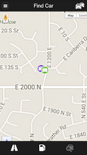

About Fuse
Fuse is an open source project for connecting cars to their owners and drivers. Fuse started life as a Kickstarter campaign. Fuse combines a sensor, a mobile app and the Cloud to create a new experience around owning and using a car.
Many connected car products rely on your phone to transmit data from the device to the service that powers the system. Fuse devices connect directly to the cloud so that Fuse works even if you're not in your car. Teen drive with a "feature phone?" No problem. Vehicle towed? Fuse has your back. Battery draining? Fuse can let you know. This also means that Fuse works with multiple drivers without the hassle of managing Bluetooth connections to everyone's phones.
Fuse provides cool features that make managing your cars easier and more informative than ever.
-
Trips—Fuse automatically keeps track of every trip you make. You can easily classify and name trips for business purposes. Fuse also tells you how much each trip costs and aggregates this information for each day and month and a per vehicle and fleet basis.

-
Fuel—Fuse helps you keep track of your fuel purchases and usage, giving you valuable information such as your real MPG and how it's changing over time and as you drive.
-
Find my Car—Fuse shows you where all your cars are and even provides convenient walking directions from your current location to your vehicle.

On top of all that, Fuse provides an extensible API and open-source applications for iOS and Android. If you're a developer, Fuse is the answer to connecting cars to whatever you like. If Fuse doesn't do what you want, you have complete freedom to modify it to your purposes.
We continue to work on new features. Right now we're busy adding a new feature that will help you track your car maintenance and alert you to important information about your car's current condition, including OBD II Diagnostic Trouble Codes.
Privacy and Fuse
One of the distinguishing features of Fuse is that not only do we promise to keep your data private, the entire system is engineered to protect the provacy of your data. We don't use your data or share it with anyone else except with your explicit permission. The system is built using a technology that allows for self-hosting.